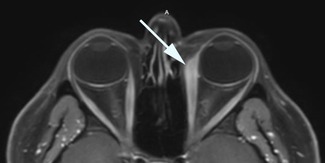
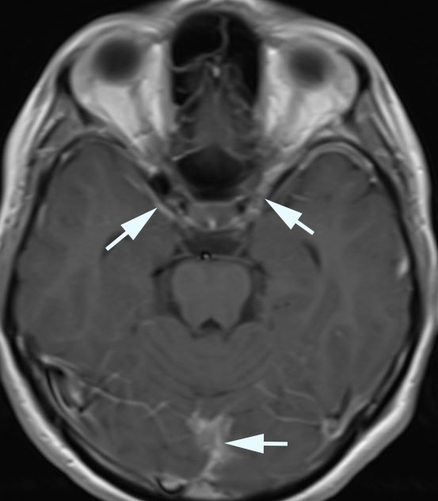

Considered a variant of orbital inflammation that may also involve the lacrimal gland, sclera, optic nerve sheath, periorbita, Tenon’s capsule, orbital fat
Common causes: idiopathic (“idiopathic orbital inflammation”), sarcoidosis, systemic connective tissue disease
Episcleral hyperemia over extraocular muscle insertions
Conjunctival hyperemia, chemosis
Possible accompanying clinical features
Keratitis
Scleritis
Dacryoadenitis
Uveitis
Imaging features

Orbital imaging may show enlargement of extraocular muscles,
enlargement of lacrimal gland, enhancement of dura, and congestion of orbital fat (“fat stranding”) and sinus mucosa, and rarely necrosis of muscle, mucosa, and bone
Trap:
imaging may show normal or even small extraocular muscles when the disease has entered the atrophic phase

Brain imaging may show pachymeningeal thickening and enhancement
Body imaging may show pulmonary, serosal, or nodal abnormalities
Evaluate for tenderness and resistance to retropulsion of the eye
Perform forced (passive) ductions if large ductional deficits are present
Perform orbital/brain imaging
Tip:
MRI provides better definition of soft tissues, but CT is more available and better for bone
Treat for orbital infection if that diagnosis cannot be safely excluded
Pay special attention to excluding fungal sino-orbital disease in diabetes and other immune-compromised states
Consider body imaging and blood tests if there are suggestive manifestations of a systemic process
If infection has been excluded, treat empirically with prednisone 1mg/kg/day
If manifestations improve with prednisone treatment, taper the prednisone dose slowly
If manifestations recur, consider orbital biopsy if there is a discrete lesion
If biopsy suggests inflammation, raise the prednisone dose
Trap:
complications are bound to occur with long term use of corticosteroids
Replace corticosteroids with a corticosteroid-sparing agent (azathioprine, methotrexate, cyclosporine, mycophenolate) if long-term treatment is required
If treatment does not work, the myositis may have entered a cicatricial (scarred) phase or the diagnosis is incorrect
Trap:
corticosteroid dependency does not exclude a neoplastic disorder
Trap:
Patients with diffuse orbital imaging abnormalities are often misdiagnosed as having orbital cellulitis and treated with antibiotics, delaying anti-inflammatory treatment
Prednisone treatment usually rapidly reduces active inflammation, but…
Trap:
reactivation of inflammation is common, especially if the prednisone dose is tapered too rapidly
Tip:
because corticosteroid dependency is common and potentially dangerous, replace corticosteroids with “corticosteroid-sparing” agents within weeks of starting treatment
Inflammation usually “burns out” after months to years, but may leave eyes misaligned from scarred, shortened extraocular muscles
Systemic autoimmune condition may be present at diagnosis or appear later
Spectacle prisms may relieve diplopia in the short term, but an occluder of one eye, including an opaque contact lens, may be necessary
Eye muscle surgery, which should be deferred until the condition is inactive, may relieve diplopia